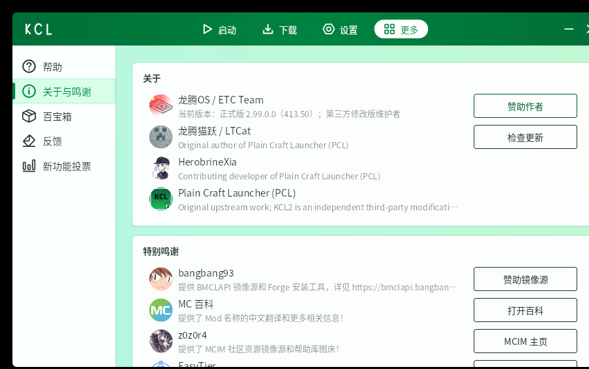
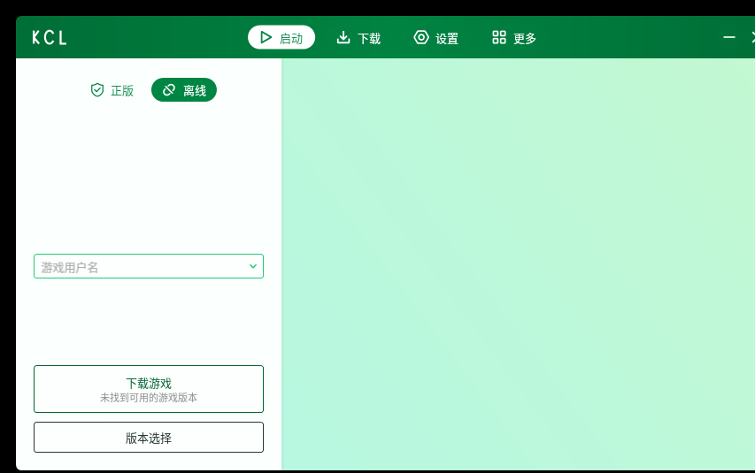
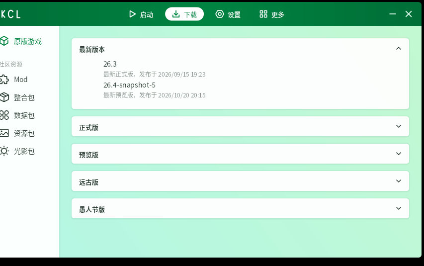
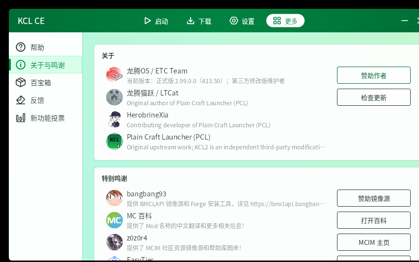

启动页
离线与正版登录、游戏用户名、版本入口，沿用 PCL2 的界面布局，默认绿色主题。

下载页
直接拉取 Mojang 官方版本清单，正式版、预览版、远古版分组展示，可下载并安装原版与各类加载器。

关于与更新
保留原作者与上游的英文署名；每次启动自动检查本仓库更新，可选择立即更新、以后再说或忽略该版本。

KCL2 基于 Plain Craft Launcher 2 二次开发，保留版本下载、加载器安装、整合包管理、版本隔离与微软正版登录。版本文件默认同时走 Mojang 官方源与 BMCLAPI 镜像源，任一源失败会自动切换，支持多线程与断点续传。
解压后只有一个 KCL2.exe，首次运行在同目录生成 KCL 与 .minecraft 两个文件夹。要求 Windows 7 及以上 64 位、已安装 .NET Framework 4.8。离线与正版登录、游戏用户名、版本入口，沿用 PCL2 的界面布局，默认绿色主题。
直接拉取 Mojang 官方版本清单，正式版、预览版、远古版分组展示，可下载并安装原版与各类加载器。
保留原作者与上游的英文署名；每次启动自动检查本仓库更新，可选择立即更新、以后再说或忽略该版本。

社区版与 KCL2 同一套代码与界面，绿色主题、正版 / 离线入口一致，单文件启动。

真实拉取版本清单并下载，社区版走独立的更新通道与公告，不与主力版互相干扰。

同样保留龙腾猫跃 / LTCat 与 PCL 上游的英文署名，改动由 ETC Team 维护。

基于 FCL（Fold Craft Launcher）的第三方再发行，在手机上运行 Minecraft Java 版；更新与公告走本团队仓库，保留 FCL 上游署名，遵循 GPL-v3。全架构通用 APK。
下载 KCL 手机版 APK